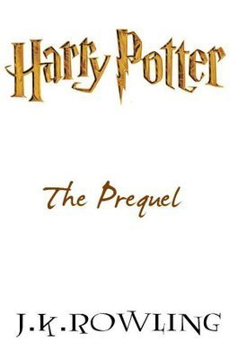

The Harry Potter Prequel is an 800-word story written by J. K. Rowling, and was published online on June 11th, 2008. Set three years before the birth of Harry Potter, the story recounts an adventure had by Sirius Black and James Potter.
J.K. Rowling announced on May 28, 2008 that she was writing a prequel story for English PEN, the writers' association, and the Dyslexia Society. The story, handwritten on a card, would then be auctioned off alongside similar cards from other authors on June 11th, 2008, with the proceeds going to charity. A book of facsimiles was published in August 2008, allowing fans to own and read the story. The story can be found at Mugglenet and other websites online.